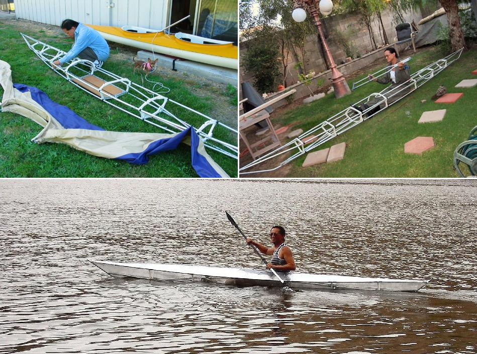

| Sea Ranger and Yarra by Joan Roco (US) | Menu Last Page Next Page |
|

Joan assembles her Sea Ranger at Purdy, Washington . In the second frame pic above, she displays the type of crutches used to construct the stringers. In the lower pic, Joan is seen test paddling a Yarra she built. The test skin is made from plastic wrap.
|
|